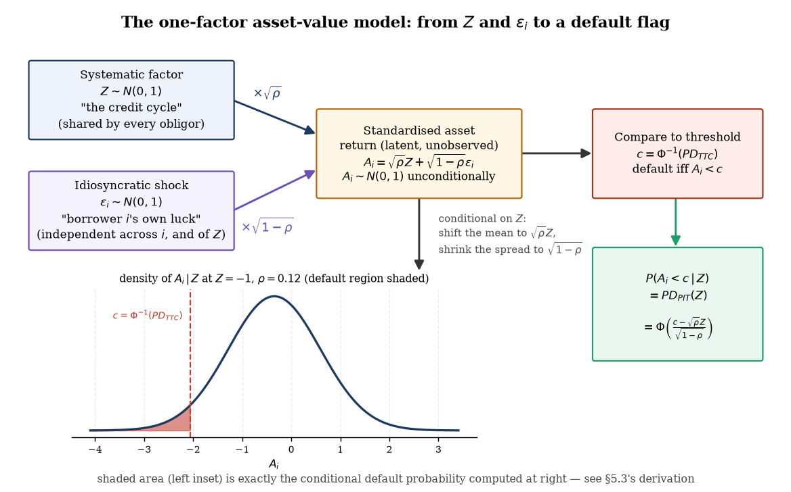
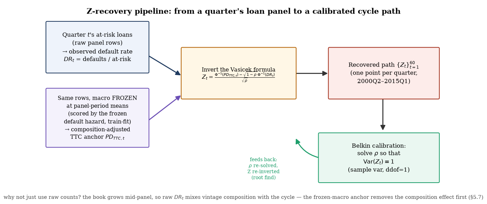

Chapter 5 — The Vasicek One-Factor Model (PIT vs TTC)
From an asset-value latent factor to the conditional PD curve — deriving, verifying, and calibrating point-in-time credit risk
IFRS9 ECL Study-Notes Compendium — Chapter 5 of 13. Compiled from knowledge/sources/ifrs9_credit_risk_notes.md §8, tests/fixtures/compute_vasicek.py, engine/vasicek.py, outputs/vasicek/vasicek_report.md, and wiki/pages/scenario-layer.md on 2026-07-19.
Every hazard model in Chapter 3 was fit on historical panel data — it necessarily blends calm
years and stressed years into one set of coefficients. IFRS 9 does not want that blend: it wants a
probability of default that reflects current and forecast conditions (§5.5.17), not the
long-run average. This chapter derives, from first principles, the single most important transformation
layer in credit risk modelling — the one that turns a through-the-cycle (TTC) PD into a point-in-time
(PIT) PD conditional on where the economy sits in the credit cycle, and (the harder direction) recovers
that cycle position from history when nobody handed it to you. Source anchor:
knowledge/sources/ifrs9_credit_risk_notes.md §8 (all sections); project evidence from
engine/vasicek.py, analysis/fit_vasicek.py, and
outputs/vasicek/vasicek_report.md (§5.6–5.7).
5.1 TTC vs PIT: the philosophical distinction
Before any algebra, the two philosophies this whole chapter reconciles need to be stated precisely —
they answer different questions about the same borrower.
Definitions.
Through-the-cycle (TTC) PD, $PD_{TTC}$ — the cycle-neutral, long-run average default
probability for a grade or portfolio: what you'd predict for a borrower with these characteristics
averaged across an entire economic cycle, ignoring whether today happens to be a boom or a recession.
Point-in-time (PIT) PD, $PD_{PIT}$ — the default probability conditional on
current and forecast economic conditions: higher in a downturn, lower in an expansion, for the
same underlying borrower quality.
$Z$ — the systematic factor (defined fully in §5.2): a single real number
summarising "where the credit cycle currently is", with $Z>0$ a good state and $Z<0$ a downturn.
Basel IRB systems are typically built TTC or hybrid (capital should not swing wildly with every quarter's
data), whereas IFRS 9 explicitly requires PIT, forward-looking parameters that incorporate reasonable
and supportable information about the future (Chapter 6 picks up how forecast scenarios enter this
picture). A bank that already has a TTC-calibrated IRB PD model therefore needs a
transformation layer that takes a TTC PD in and returns a PIT PD out, conditional on a
macro state — that transformation layer is exactly what this chapter derives.
Why not just refit the model on recent data only? Refitting continuously on a short recent window
throws away most of the panel's statistical power and re-injects the very cyclicality IFRS 9's
staging/SICR framework is trying to isolate from the loss-given-default and exposure legs. The Vasicek
approach keeps one TTC model (Chapter 3's hazard, fit on the full panel) and adds a single,
theoretically motivated dial — the systematic factor $Z$ — that shifts every PD up or down together,
consistently, without refitting anything.
Gotcha — TTC and PIT are not "two different models". They are the same underlying credit
quality assessment viewed through two different conditioning sets: $PD_{TTC}$ conditions only on borrower
characteristics; $PD_{PIT}(Z)$ conditions on borrower characteristics and the current point in the
cycle. Nothing about the borrower changed between the two numbers — only how much macro information is
folded in. Treating them as competing, independently-calibrated models (rather than one model with an
extra conditioning variable) is the single most common conceptual error in this area.
Check yourself.
A bank's Basel IRB PD model is TTC-calibrated. Why can it not be submitted directly as the IFRS 9
ECL input?
Answer
IFRS 9 §5.5.17(c) requires PD estimates to reflect reasonable and
supportable forward-looking information — a cycle-neutral long-run average, by construction, does not
respond to current or forecast conditions, so it understates PD in a downturn and overstates it in an
expansion relative to what the standard asks for.
What does $Z>0$ mean, and what does it do to $PD_{PIT}$ relative to $PD_{TTC}$?
Answer
$Z>0$ is a good macro state (above the cycle's average); it compresses
$PD_{PIT}$ below $PD_{TTC}$ — see §5.3's derived formula and the golden fixture table, where
$Z=+2$ gives $PD_{PIT}=0.17\%$, well below the $2\%$ TTC anchor.
5.2 The one-factor Gaussian asset-value model
The Vasicek/ASRF (Asymptotic Single Risk Factor) framework builds PIT conditioning out of a structural
story about why a borrower defaults, in the spirit of Merton's model from Chapter 3
(§A9): a borrower defaults when some latent "asset value" falls below a threshold. The one-factor
model's specific move is to decompose that latent asset value into a part every borrower shares (the
economy) and a part unique to each borrower.
Definitions (every symbol used from here on).
$A_i$ — borrower $i$'s standardised asset return: a latent, unobserved continuous
variable (not a literal balance-sheet asset value — a modelling device standing in for "overall borrower
health this period"), constructed to be standard normal.
$Z$ — the systematic factor: $Z\sim N(0,1)$, shared identically by every borrower in
the portfolio. This is the single number representing the credit cycle (macro conditions, sector-wide
shocks) that Chapter 6's scenario paths ultimately drive.
$\varepsilon_i$ — the idiosyncratic shock: $\varepsilon_i\sim N(0,1)$, independent
across borrowers $i$ and independent of $Z$ — borrower $i$'s own luck, unrelated to the wider economy
(a job loss, an illness, a local event).
$\rho$ — the asset correlation: $\rho\in(0,1)$, the fraction of each borrower's asset
variance attributable to the shared systematic factor. $\rho$ near 0 means borrowers default almost
independently of each other and of the cycle; $\rho$ near 1 means the whole portfolio moves as one.
$PD_{TTC}$ — the through-the-cycle PD from §5.1, taken as an input to this model (it comes from
Chapter 3's hazard model or a rating grade's long-run average).
$c$ — the default threshold, derived in §5.3 as $c=\Phi^{-1}(PD_{TTC})$, where
$\Phi(\cdot)$ is the standard-normal CDF.
The model asserts a single decomposition equation:
$$ A_i = \sqrt{\rho}\,Z + \sqrt{1-\rho}\,\varepsilon_i, \qquad Z,\varepsilon_i \stackrel{iid}{\sim} N(0,1)\ \text{independent of each other.} $$
Interpretation — why this exact decomposition, and why the square roots. The weights $\sqrt{\rho}$
and $\sqrt{1-\rho}$ are not arbitrary — they are chosen so that $A_i$ itself comes out standard normal
(shown formally in §5.3, step 1), which is what lets the threshold $c$ be read directly off the
standard-normal table as $\Phi^{-1}(PD_{TTC})$. Splitting $A_i$ into a common piece ($Z$) and a private
piece ($\varepsilon_i$) is what makes every borrower's default correlated with every other borrower's
default only through the shared $Z$ — exactly the "systemic vs idiosyncratic" split that credit
portfolio risk (and Basel's capital formula, which uses the same kernel at $Z$'s 99.9th percentile) is
built on. Exhibit 5.1 draws the whole structure end to end.

Exhibit 5.1 — The one-factor asset-value model: $Z$ (systematic) and $\varepsilon_i$
(idiosyncratic) combine into $A_i$; defaulting is $A_i\lt c$; conditioning on $Z$ shifts and shrinks the
distribution of $A_i$, shading the default region shown in the inset. Regenerated in matplotlib
(knowledge/sources/ifrs9_credit_risk_notes.md §8).
Validity condition — this is a PORTFOLIO-level statement, not a per-loan guarantee. The ASRF
approximation (used implicitly whenever a single default RATE is identified with $PD_{PIT}(Z)$, as in
§5.6–5.7) requires an infinitely granular portfolio — no single borrower's idiosyncratic shock
should move the portfolio default rate. For a large, well-diversified retail mortgage book this is a
reasonable approximation; for a handful of large corporate names it is not, and idiosyncratic
concentration risk needs a separate capital add-on.
Gotcha — $\rho$ here is an ASSET correlation, not a DEFAULT correlation. $\rho$ measures how
correlated the latent, continuous $A_i$ variables are across borrowers — the correlation between the much
rarer binary default EVENTS is always smaller than $\rho$ (defaults are tail events; two borrowers can have
highly correlated asset values and still only rarely default in the same quarter). Reading a calibrated
$\rho=0.0227$ (§5.7) as "2.27% of defaults are correlated" conflates the two quantities.
Check yourself.
Why must $Z$ and $\varepsilon_i$ be independent of each other for the decomposition to make sense?
Answer
If $Z$ and $\varepsilon_i$ were correlated, the split into "systematic" and
"idiosyncratic" would double-count some of the variance — part of what looks like borrower $i$'s own
luck would secretly already be priced into the cycle factor, breaking both the clean variance
decomposition in §5.3 step 1 and the conditioning argument in step 3 (which relies on
$\varepsilon_i$ staying standard normal even after conditioning on $Z$).
Two portfolios have identical $PD_{TTC}$ but portfolio B has a higher $\rho$ than portfolio A. In a
downturn ($Z\ll 0$), which portfolio's PIT PD rises further, and why?
Answer
Portfolio B (higher $\rho$) — a larger $\rho$ means more of each borrower's asset
variance is tied to the shared factor $Z$, so a bad realisation of $Z$ pushes every borrower's asset
value down together more forcefully, and (per §5.3's formula) the $\sqrt{\rho}Z$ term in the
numerator has more weight, moving $PD_{PIT}(Z)$ further from $PD_{TTC}$ for the same $|Z|$.
5.3 Derivation: from asset value to PD_PIT(Z)
This is the derivation flagged explicitly in the campaign brief (backlog D-5) — the notes present
$PD_{PIT}(Z)=\Phi\big[(\Phi^{-1}(PD_{TTC})-\sqrt{\rho}Z)/\sqrt{1-\rho}\big]$ as a given formula; every step
from the asset-value representation to that formula is shown here, with no skipped algebra.
Derivation — the Vasicek conditional-PD formula.
1.$A_i$ is standard normal unconditionally.
$A_i=\sqrt{\rho}Z+\sqrt{1-\rho}\,\varepsilon_i$ is a linear combination of two independent standard normals,
hence itself normal, with mean $\mathbb{E}[A_i]=\sqrt{\rho}\,\mathbb{E}[Z]+\sqrt{1-\rho}\,\mathbb{E}[\varepsilon_i]=0$
and, using independence ($\mathrm{Cov}(Z,\varepsilon_i)=0$),
$\mathrm{Var}(A_i)=\rho\,\mathrm{Var}(Z)+(1-\rho)\,\mathrm{Var}(\varepsilon_i)=\rho(1)+(1-\rho)(1)=1$.
So $A_i\sim N(0,1)$ unconditionally — this is exactly why the weights are $\sqrt{\rho}$ and $\sqrt{1-\rho}$
(square roots of variance shares, not the shares themselves): they make the variances, not the standard
deviations, add to 1.
2.Calibrate the threshold $c$ so the unconditional
default probability is exactly $PD_{TTC}$. Define default as the event $A_i\lt c$ for some threshold
$c$. Since $A_i\sim N(0,1)$ (step 1), $P(A_i\lt c)=\Phi(c)$. Requiring this unconditional probability to
equal $PD_{TTC}$ (the calibration condition — this is what "TTC" means for this model: the threshold is set
against the long-run average) gives $\Phi(c)=PD_{TTC}$, hence
$$ c = \Phi^{-1}(PD_{TTC}). $$
This is the calibration step that is often skipped in compressed presentations of the model — $c$ is not
an assumption, it is derived from requiring internal consistency with the TTC anchor.
3.Condition on $Z$. Fix a value of $Z$.
Then $A_i=\sqrt{\rho}Z+\sqrt{1-\rho}\,\varepsilon_i$ is, conditional on $Z$, a deterministic shift
($\sqrt{\rho}Z$) plus $\sqrt{1-\rho}$ times $\varepsilon_i$ — and $\varepsilon_i$ is independent of $Z$, so
conditioning on $Z$ does not change $\varepsilon_i$'s distribution: $\varepsilon_i\mid Z \sim N(0,1)$, the
same as its unconditional distribution. Therefore
$$ A_i \mid Z \;\sim\; N\big(\sqrt{\rho}Z,\ 1-\rho\big). $$
4.Standardise and evaluate.
$$ P(A_i\lt c\mid Z) = P\big(\sqrt{\rho}Z+\sqrt{1-\rho}\,\varepsilon_i\lt c \mid Z\big) = P\!\left(\varepsilon_i < \frac{c-\sqrt{\rho}Z}{\sqrt{1-\rho}}\ \Big|\ Z\right). $$
Since $\varepsilon_i\mid Z\sim N(0,1)$ (step 3), the right-hand probability is exactly the standard
normal CDF evaluated at that point:
$$ P(A_i\lt c\mid Z) = \Phi\!\left(\frac{c-\sqrt{\rho}Z}{\sqrt{1-\rho}}\right). $$
5.Substitute the calibrated threshold from
step 2. Writing $PD_{PIT}(Z):=P(A_i\lt c\mid Z)$ and substituting $c=\Phi^{-1}(PD_{TTC})$:
$$ \boxed{\,PD_{PIT}(Z) = \Phi\!\left(\frac{\Phi^{-1}(PD_{TTC})-\sqrt{\rho}\,Z}{\sqrt{1-\rho}}\right)\,} $$
— the target formula, with every step traceable back to the asset-value decomposition and nothing asserted
without justification.
Interpretation. Step 4's standardisation is the entire mechanism: conditioning on $Z$ shrinks
the residual borrower-level uncertainty from a full standard normal ($A_i$ unconditionally) down to just
the idiosyncratic piece ($\varepsilon_i\mid Z$, scaled by $\sqrt{1-\rho}$), and shifts the threshold's
effective location by $\sqrt{\rho}Z$. A downturn ($Z<0$) makes $-\sqrt{\rho}Z$ positive, pushing the
argument of $\Phi$ up, so $PD_{PIT}$ rises above $PD_{TTC}$ — and because $\Phi$ is an S-shaped CDF, this
effect is not linear in $Z$: moving $Z$ from 0 to $-1$ moves $PD_{PIT}$ by less than moving it from
$-1$ to $-2$ does (in absolute PD terms) whenever the starting PD is on the steep part of $\Phi$'s curve,
the mechanism behind Chapter 6's Jensen's-inequality result.
Worked example — the golden fixture, step by step. $PD_{TTC}=2\%$, $\rho=0.12$
(tests/fixtures/compute_vasicek.py). First, the calibrated threshold (step 2):
$$ c = \Phi^{-1}(0.02) = -2.053749, \qquad \sqrt{\rho}=\sqrt{0.12}=0.346410, \qquad \sqrt{1-\rho}=\sqrt{0.88}=0.938083. $$
Now substitute three marked cycle states into step 5's formula, with every intermediate value shown
(computed by tests/fixtures/compute_vasicek.py, printed values below):
$Z$
numerator $c-\sqrt{\rho}Z$
ratio $\div\sqrt{1-\rho}$
$PD_{PIT}(Z)=\Phi(\text{ratio})$
$+2.0$ (good state)
$-2.053749-(0.346410)(2.0)=-2.746569$
$-2.746569/0.938083=-2.927853$
$\Phi(-2.927853)=0.17\%$
$\phantom{+}0.0$ (cycle-neutral)
$-2.053749-(0.346410)(0.0)=-2.053749$
$-2.053749/0.938083=-2.189304$
$\Phi(-2.189304)=1.43\%$
$-2.0$ (downturn)
$-2.053749-(0.346410)(-2.0)=-1.360929$
$-1.360929/0.938083=-1.450755$
$\Phi(-1.450755)=7.34\%$
The full 6-point table the source notes tabulate (all reproduced exactly by
compute_vasicek.py's RESULTS, matching TARGETS at the notes'
displayed 2-decimal precision):
$Z$ (cycle)
+2.0
+1.0
0.0
−1.0
−2.0
−2.5
$PD_{PIT}$ (computed)
0.1707%
0.5255%
1.4287%
3.4377%
7.3424%
10.2736%
$PD_{PIT}$ (notes, 2dp)
0.17%
0.53%
1.43%
3.44%
7.34%
10.27%
Interpretation. A $2\%$ TTC borrower is essentially safe in a good state ($0.17\%$ at $Z=+2$, an
$11.7\times$ compression) and roughly $5\times$ riskier at the depth of a downturn ($10.27\%$ at $Z=-2.5$)
— the asymmetry (compression in good states is smaller in absolute terms than inflation in bad states) is
the same convexity Chapter 6 turns into a quantitative Jensen's-inequality statement about
probability-weighted vs single-path ECL.
Check yourself.
In step 2, why is $c=\Phi^{-1}(PD_{TTC})$ rather than, say, $c=PD_{TTC}$ directly?
Answer
$c$ is a threshold on the standard-normal variable $A_i$, not a probability itself
— $P(A_i\lt c)=\Phi(c)$ (step 1's result), so setting this equal to $PD_{TTC}$ and solving for $c$
requires inverting $\Phi$: $c=\Phi^{-1}(PD_{TTC})$. Using $c=PD_{TTC}$ directly would put the threshold
on the wrong scale (a probability, not a standard-normal quantile) and give the wrong unconditional
default rate.
Recompute $PD_{PIT}(Z=-1.0)$ from the boxed formula using $c=-2.053749$, $\sqrt{\rho}=0.346410$,
$\sqrt{1-\rho}=0.938083$ and check it against the table.
Answer
Which step of the derivation would break if $\varepsilon_i$ were correlated with $Z$?
Answer
Step 3 — the claim "$\varepsilon_i\mid Z\sim N(0,1)$, unchanged from its
unconditional distribution" relies entirely on independence between $\varepsilon_i$ and $Z$. If they
were correlated, conditioning on $Z$ would shift and/or rescale $\varepsilon_i$'s conditional
distribution too, and the clean closed form in step 4 would not follow.
Gotcha — $\Phi^{-1}(PD_{TTC})$ is negative for any realistic PD. Since $PD_{TTC}<0.5$ for any sane
credit portfolio, $\Phi^{-1}(PD_{TTC})<0$ always ($\Phi^{-1}(0.02)=-2.0537$ here). It is easy to
mis-transcribe the sign when substituting into the numerator $c-\sqrt{\rho}Z$ — double-check that a
POSITIVE $Z$ (good state) makes the numerator MORE negative (since $-\sqrt{\rho}Z<0$ when $Z>0$), which
pushes $\Phi(\cdot)$ toward 0, i.e. a LOWER PD. If your substitution gives a higher PD at $Z=+2$ than at
$Z=-2$, a sign has flipped somewhere.
5.4 The anchor property: E_Z[PD_PIT(Z)] = PD_TTC
The model would be useless as a TTC-consistent transformation layer if averaging $PD_{PIT}(Z)$ back over
the cycle did not return exactly $PD_{TTC}$. This section proves that it does, analytically, then verifies
it two independent numerical ways.
Theorem — the anchor property. With $Z\sim N(0,1)$ and $PD_{PIT}(Z)$ as derived in
§5.3, $$ \mathbb{E}_Z\big[PD_{PIT}(Z)\big] = PD_{TTC}. $$
Proof — via the tower property / law of total probability.
1. By definition, $PD_{PIT}(Z)=P(\text{default}\mid Z)$ — the
conditional probability of the event "$A_i\lt c$" given the systematic factor $Z$ (§5.3, step 4).
2. The tower property (law of total probability, integrating
a conditional probability over the conditioning variable's own distribution) states
$\mathbb{E}_Z\big[P(\text{default}\mid Z)\big]=P(\text{default})$ — the UNCONDITIONAL probability of
default, marginalising $Z$ out.
3. But $P(\text{default})=P(A_i\lt c)$ is exactly the quantity
§5.3 step 2 calibrated $c$ against: $P(A_i\lt c)=\Phi(c)=PD_{TTC}$, by construction.
Interpretation. This is not a numerical coincidence that happens to hold at $PD_{TTC}=2\%,\rho=0.12$
— it is a structural identity that holds for any $(PD_{TTC},\rho)$ pair, because it follows purely
from how $c$ was calibrated in §5.3 step 2 and the tower property, neither of which depended on
the specific numbers. It is the model's internal consistency guarantee: cycle-average the PIT curve and you
get back exactly the TTC anchor you started from, no matter how you slice the cycle.
Numerical verification — Gauss–Hermite quadrature. The proof above is exact, but
tests/fixtures/compute_vasicek.py additionally verifies it numerically two independent ways, as
the backlog requires. Gauss–Hermite quadrature approximates
$\mathbb{E}_Z[f(Z)]=\frac{1}{\sqrt{\pi}}\sum_i w_i\, f(\sqrt{2}\,x_i)$ for Hermite nodes $x_i$/weights
$w_i$ and $f=PD_{PIT}(\cdot)$. At $n=80$ nodes, printed directly from the fixture's computation:
A second, independent method — fine trapezoidal integration of $PD_{PIT}(z)\cdot\phi(z)$ over
$z\in[-10,10]$ at 200,001 points — lands on the same six-decimal value:
expected_pd_pit_fine_grid = 0.020000. Both agree with $PD_{TTC}=0.020000$ to far beyond the
notes' displayed precision, and with each other despite being algorithmically unrelated (orthogonal
polynomial quadrature vs brute-force trapezoidal integration) — a strong cross-check that the closed-form
formula and its integral are both implemented correctly.
Do not confuse this with "$Z=0$ reproduces $PD_{TTC}$". $PD_{PIT}(0)=1.4287\%\ne PD_{TTC}=2\%$ (the
golden fixture's own $Z=0$ row) — the anchor property is about the average over the full distribution
of $Z$, not the value at the cycle-neutral point $Z=0$. The gap $PD_{TTC}-PD_{PIT}(0)=2\%-1.43\%=0.57$
percentage points is Jensen's inequality again ($PD_{PIT}$ is convex in $Z$ over this range, so its value
at the mean of $Z$ is below the mean of its values) — Chapter 6 proves this rigorously and quantifies
the ECL consequence.
Gotcha — the anchor property is a statement about $Z$'s TRUE distribution, not about a finite
sample. A recovered path of only 60 quarters (§5.6–5.7) will not average to exactly
$PD_{TTC}$ even at the correctly calibrated $\rho$ — sampling noise in a finite historical window means
the SAMPLE mean of $PD_{PIT}(Z_t)$ over 60 realised quarters can differ from the theoretical $PD_{TTC}$
anchor. §5.7 documents exactly this: the recovered path's mean(Z) is $-1.145$, not $0$, and the notes
attribute the gap to identifiable modelling causes rather than treating it as a violation of the theorem.
Check yourself.
Which step of the tower-property proof would fail if $c$ had been chosen arbitrarily, rather than
calibrated as $\Phi^{-1}(PD_{TTC})$?
Answer
Step 3 — $P(A_i\lt c)=\Phi(c)$ would still hold (that's just $A_i$'s
unconditional CDF), but it would equal $\Phi(c)$ for whatever $c$ was chosen, not necessarily
$PD_{TTC}$. The whole point of the calibration in §5.3 step 2 is to make $\Phi(c)=PD_{TTC}$
exactly, which is what step 3 then plugs in.
Why does the fixture verify the anchor property with TWO independent numerical methods instead of
one?
Answer
Agreement between two algorithmically unrelated methods (orthogonal-polynomial
quadrature vs brute-force trapezoidal grid integration) that both land on the same value is much
stronger evidence of a correct implementation than either method alone — a bug shared by both would
have to be a genuine error in the closed-form $PD_{PIT}(Z)$ formula itself, not an artefact of one
integration scheme.
5.5 Interactive: PD_PIT vs Z & ρ, and a TTC↔PIT converter
The widget below re-implements §5.3's boxed formula in JavaScript — an independent normal
CDF/inverse-CDF pair, not a lookup table — and recomputes the curve and the marked-point table live as you
drag $PD_{TTC}$ and $\rho$. At the defaults ($PD_{TTC}=2\%$, $\rho=0.12$) the six marked points reproduce
§5.3's golden-fixture table exactly, annotated as dots on the curve. Below it, a small converter box
runs the §5.6 INVERSE direction: given an observed rate and a TTC anchor, recover the implied $Z$.
Live widget — drag the sliders
Correctness check. At the defaults the marked-point table below the curve reproduces
tests/fixtures/compute_vasicek.py's golden values exactly (e.g. $PD_{PIT}(-2.0)=7.34\%$,
$PD_{PIT}(+2.0)=0.17\%$) — this page's JS normal-CDF/PPF are independent re-implementations of the same
closed form the Python fixture computes with scipy.stats.norm, so agreement to 2 displayed
decimals cross-checks both.
TTC↔PIT converter
Forward direction (TTC→PIT) is the widget above. This box runs the INVERSE direction §5.6
needs: given an observed default rate $DR$ for some period and a TTC anchor, invert §5.3's formula to
recover the implied systematic factor $Z$ — the same invert_z operation
engine/vasicek.py runs once per panel quarter.
Recover Z from an observed rate
What to try. The converter's defaults are the panel's own 2008Q1 row
(outputs/vasicek/z_path.csv: observed $DR=4.15\%$, composition-adjusted anchor
$PD_{TTC,t}=1.67\%$, calibrated $\rho=0.0227$) — it recovers $Z\approx-2.74$, the credit-cycle trough
§5.7 reports. Push the observed rate toward the anchor value and watch $Z\to 0$; push $\rho$ toward 0
and watch small differences between observed and anchor blow $|Z|$ up (the $1/\sqrt{\rho}$ factor in the
inversion formula), which is exactly the mechanism §5.7's Belkin calibration exploits to pin down
$\rho$.
Gotcha — the flagship widget's curve is NOT the same object as the anchor property. Moving the
sliders shows how $PD_{PIT}$ varies WITH $Z$ at a fixed $(PD_{TTC},\rho)$ — it never re-verifies
§5.4's $\mathbb{E}_Z[PD_{PIT}(Z)]=PD_{TTC}$ identity, because the widget does not integrate over $Z$'s
distribution, it only evaluates the curve pointwise. The two are related (the curve IS the function being
averaged) but a live curve is a different check from a live integral.
Check yourself.
At the widget's default sliders, what should $PD_{PIT}(Z=-2.5)$ read, and against which fixture value
can you verify it?
Answer
$10.27\%$ — verifiable against tests/fixtures/compute_vasicek.py's
RESULTS['pd_pit_pct_z_minus_2_5'] (computed $10.2736\%$, matching the notes' displayed
$10.27\%$).
In the converter, if $DR_t$ exactly equals the anchor $PD_{TTC,t}$, what should the recovered $Z$ be,
and why isn't it always exactly 0 even then?
Answer
Algebraically, $Z=\big(\Phi^{-1}(a)-\sqrt{1-\rho}\Phi^{-1}(a)\big)/\sqrt{\rho}
=\Phi^{-1}(a)\,(1-\sqrt{1-\rho})/\sqrt{\rho}$ when $DR_t=a=$ anchor — this is only exactly 0 if
$\Phi^{-1}(a)=0$ (i.e. $a=50\%$, never true for a credit portfolio) or $\rho\to 0$; for any realistic
anchor and $\rho>0$ there is a small structural offset, exactly the "(ii) structural inversion offset"
cause §5.7's report documents for why mean(Z) is not forced to zero.
5.6 Z-recovery on the panel: why raw counts mislead
Sections 5.1–5.5 assumed $Z$ was handed to you. In practice nobody hands you the cycle factor —
it has to be RECOVERED from a history of observed default rates by inverting §5.3's formula. This
section walks the recovery pipeline actually run on this project's 50k-loan mortgage panel
(engine/vasicek.py, method documented in outputs/vasicek/vasicek_report.md).
Derivation — inverting the Vasicek formula to recover $Z_t$.
1. Identify a period (quarter $t$)'s OBSERVED default rate
$DR_t$ (defaults / at-risk loans that quarter) with the model's $PD_{PIT}(Z_t)$ — the ASRF infinite-
granularity approximation from §5.2's warning box, applied here at the FINITE portfolio level (the
panel's 621,736 loan-quarters are large enough that this is a reasonable working approximation, not exact).
2. Start from §5.3's boxed formula with the period's own
TTC anchor $PD_{TTC,t}$: $DR_t=\Phi\big((\Phi^{-1}(PD_{TTC,t})-\sqrt{\rho}Z_t)/\sqrt{1-\rho}\big)$.
3. Apply $\Phi^{-1}$ to both sides:
$\Phi^{-1}(DR_t)=(\Phi^{-1}(PD_{TTC,t})-\sqrt{\rho}Z_t)/\sqrt{1-\rho}$.
4. Solve for $Z_t$: multiply by $\sqrt{1-\rho}$, move terms,
divide by $\sqrt{\rho}$:
$$ Z_t = \frac{\Phi^{-1}(PD_{TTC,t}) - \sqrt{1-\rho}\,\Phi^{-1}(DR_t)}{\sqrt{\rho}}. $$
This is an EXACT algebraic inversion of §5.3's formula — not a new model, the same equation solved for
a different unknown.

Exhibit 5.2 — The Z-recovery pipeline run once per panel quarter: observed rate
and composition-adjusted anchor → inversion → $Z_t$ → Belkin $\mathrm{Var}(Z_t)=1$
calibration (which re-solves $\rho$ and feeds back into the inversion). Regenerated in matplotlib
(engine/vasicek.py, outputs/vasicek/vasicek_report.md).
The composition-adjustment problem — why $PD_{TTC,t}$ must vary by quarter, and why raw counts
mislead. This project's 50k-loan panel GROWS toward mid-panel (more loans are at risk in later
quarters than early ones) — so the raw observed default COUNT, and even the raw observed RATE, mixes
vintage composition (which loans happen to be at risk this quarter, and how seasoned/risky they
are) with the genuine credit CYCLE effect this chapter wants to isolate. A naive Z-recovery that used one
FIXED $PD_{TTC}$ for every quarter (the golden-fixture convention, fine for a static worked example) would
attribute composition shifts to the cycle, contaminating $Z_t$. engine/vasicek.py's fix:
recompute the TTC anchor EVERY quarter as the mean PREDICTED hazard of that quarter's ACTUAL at-risk rows,
scored by the frozen (train-fit) default hazard with the four macro regressors held at PANEL-PERIOD MEANS
($\overline{uer}_{t-1}=6.4000$, $\overline{\Delta_4 uer}_{t-1}=0.1600$, $\overline{hpi\ growth}_{t-1}=0.0096$,
$\overline{gdp}_{t-1}=1.8281$ — outputs/vasicek/vasicek_report.md) while loan-STATE covariates
(age, FICO, updated LTV, prepay incentive) stay ACTUAL. This reprices the live, evolving book under a
cycle-NEUTRAL macro state each quarter — composition moves the anchor, the genuine cycle moves $Z_t$.
Worked example — the 2008Q1 trough, from the panel's own numbers.
(outputs/vasicek/z_path.csv, row time=32, calendar 2008Q1): $n_{\text{at-risk}}=24{,}066$,
defaults$=999$, so the observed rate is $DR_t=999/24{,}066=4.151085\%$; the composition-adjusted anchor that
quarter is $PD_{TTC,t}=1.671181\%$; the calibrated $\rho=0.0227$ (§5.7). Substituting into
§5.6's inversion formula:
matching (to display rounding of the CSV's own inputs) the panel's reported $Z_{2008Q1}=-2.74289$ — the
credit-cycle TROUGH, per outputs/vasicek/vasicek_report.md, exactly inside the NBER-dated GFC
window (2007Q4–2009Q2).
Interpretation. The observed rate roughly TRIPLED ($4.15\%$ vs a $1.67\%$ composition-neutral
anchor) in 2008Q1 — feeding that gap through the calibrated, small $\rho=0.0227$ (division by
$\sqrt{0.0227}\approx 0.151$, a SMALL number) amplifies the standardised gap into a large $|Z|$. This is
the same $1/\sqrt{\rho}$ sensitivity the converter widget's "what to try" box demonstrated: a small $\rho$
makes the recovered cycle factor swing WIDE for a given observed-vs-anchor gap, which is exactly the lever
§5.7's Belkin calibration uses in reverse to solve for $\rho$ from the REQUIRED variance of the whole
path.
Gotcha — identifying a period default RATE with $PD_{PIT}(Z)$ is an approximation, not an identity.
§5.2's warning box already flagged this: the ASRF result is exact only for an infinitely granular
portfolio. A 24,066-loan quarter is large but finite — the recovered $Z_t$ therefore also absorbs some pure
sampling noise on top of the genuine systematic factor, most visibly in the panel's THIN early quarters
(283 at-risk loans at $t=1$, per outputs/vasicek/vasicek_report.md's documented limits), where
$|Z_t|$ noise is inflated and no smoothing is applied.
Check yourself.
Why can't the Z-recovery pipeline simply reuse the golden fixture's single, constant $PD_{TTC}=2\%$
for every quarter of the panel?
Answer
The panel's book composition changes materially across quarters (it grows toward
mid-panel, so which loans are at risk — their age, vintage, credit quality — shifts over time). A fixed
TTC anchor would misattribute those composition shifts to the systematic factor $Z_t$, contaminating the
recovered cycle with a vintage-mix effect that has nothing to do with macro conditions; the
composition-adjusted per-quarter anchor $PD_{TTC,t}$ removes this before inversion.
In the 2008Q1 worked example, which term in the inversion formula is most responsible for amplifying
the observed-vs-anchor gap into a large $|Z_t|$?
Answer
The division by $\sqrt{\rho}=\sqrt{0.0227}\approx 0.1507$ — a small $\rho$ means a
small denominator, so the same standardised numerator gap ($\approx-0.41$ here) gets divided by a small
number and blown up into $Z_t\approx-2.74$. A larger $\rho$ (e.g. the notes' $0.12$) would produce a
much smaller $|Z_t|$ for the identical observed/anchor gap.
5.7 Belkin calibration and the credit cycle
§5.6 recovered $Z_t$ GIVEN a value of $\rho$. Where does $\rho$ itself come from? Belkin, Suchower
& Forest (1998)'s answer: calibrate $\rho$ so that the recovered path's own variance matches the
model's premise that $Z\sim N(0,1)$, i.e. $\mathrm{Var}(Z)=1$.
Belkin calibration. Solve for the $\rho$ that makes $\mathrm{Var}(Z_t(\rho))=1$ (sample variance,
ddof=1, over all periods) where $Z_t(\rho)$ is §5.6's inversion formula evaluated at that $\rho$. As
$\rho\to 0$, the $1/\sqrt{\rho}$ factor blows the variance up without bound; as $\rho\to 1$, the variance
collapses toward the (small) variance of the anchor thresholds alone — so the crossing $\mathrm{Var}(Z_t(\rho))=1$
is unique in practice, found here by bracketed root-finding (engine/vasicek.py's
calibrate_rho).
Interpretation — $\rho=0.0227$ vs the notes' $0.12$ vs Basel's $0.15$. The calibrated
$\rho=0.0227$ sits well below BOTH the study notes' illustrative worked-example convention
($\rho=0.12$, used throughout §5.3–5.5) AND the Basel IRB supervisory asset correlation for
residential mortgages ($\rho=0.15$, CRE31.10 — a REGULATORY convention, calibrated for capital
conservatism, not fit to any specific time series). That ordering is the EXPECTED one, for two compounding
reasons. First, empirical asset correlations estimated from a real default-rate time series are routinely
a fraction of regulatory conventions in general — supervisory $\rho$ values are deliberately conservative
inputs to a capital formula, not maximum-likelihood fits to history. Second, and specific to this project's
methodology, COMPOSITION-ADJUSTING the anchor (§5.6) absorbs part of the systematic variance INTO the
quarter-specific TTC rate itself, damping how much variance is left for $Z_t$ to carry — which mechanically
pulls the calibrated $\rho$ down further. The orig-LTV variant shows this mechanism running in REVERSE:
freezing collateral (LTV) at origination pushes the HPI housing-price cycle OUT of the anchor (since the
anchor no longer updates for collateral value) and INTO $Z$ instead, so the recovered factor swings wider
and needs a LARGER $\rho=0.0633$ to standardise back to unit variance — still far below $0.12$/$0.15$, but
visibly closer, exactly because less of the true cycle has been pre-absorbed into the anchor.
Anchor + round-trip checks, at the project's own calibration. (outputs/vasicek/vasicek_report.md)
Gauss–Hermite anchor check at the project's own numbers (flat TTC $=1.3488\%$, $\rho=0.0227$):
$|\text{error}|=1.91\times10^{-17}$ (well under the $1\times10^{-6}$ gate — the same identity §5.4
proved, now cross-checked at a completely different, empirically-calibrated $(PD_{TTC},\rho)$ pair, not
just the golden fixture's $(2\%,0.12)$). PIT↔Z round trip on the full recovered path: max
$|\text{error}|=6.00\times10^{-15}$ (under a $1\times10^{-9}$ gate) — invert_z(pit_pd(p,z,rho),p,rho)==z
holds to machine precision, the project's fixed-conventions answer to the Basson & van Vuuren (2023)
caveat that naive TTC↔PIT round trips can be inconsistent if $\rho$, the default definition, or the
cycle index differ between legs.
Exhibit 5.3 — The credit cycle through the Vasicek lens: top, the Z-implied PIT
PD path against the flat $1.35\%$ TTC anchor and the §5.8 damped hybrid; bottom, the recovered
$Z_t$ path itself (main vs orig-LTV variant, dashed). GFC window (NBER 2007Q4–2009Q2) shaded;
calendar axis anchored $t{=}1\sim$2000Q2, verified against FRED UNRATE (corr $0.9963$).
(outputs/vasicek/credit_cycle.png, embedded — already regenerated in the project's house
matplotlib style.)
Reading the exhibit. The Z-implied PIT PD path (top panel, solid) peaks at $3.44\%$ in 2008Q1 —
$2.5\times$ the flat $1.35\%$ TTC anchor — precisely where the bottom panel's $Z_t$ path troughs at
$-2.74$, and both land squarely inside the shaded GFC window (2007Q4–2009Q2): the recovered cycle
puts the stress exactly where independently-dated history put it, a strong external validity check on the
whole pipeline. The damped hybrid (dashed orange, §5.8) tracks the same shape with a visibly smaller
amplitude — the $\alpha=0.5$ dial deliberately trading cycle pass-through for a smoother path.
Documented limitation — mean($Z$) $=-1.145$ is NOT forced to zero, and that is expected, not a bug.
Belkin calibration pins the VARIANCE of $Z_t$ to 1; sample variance is mean-invariant, so nothing in the
calibration constrains the MEAN. The observed level gap (observed rates average $2.12\%$ vs $1.35\%$ for
the frozen-macro anchor) has three identified, non-exclusive causes documented in
outputs/vasicek/vasicek_report.md: (i) Jensen/convexity of the cloglog inverse link (Chapter
3) — the hazard evaluated AT mean macros sits below the macro-AVERAGED hazard, biasing the anchor low;
(ii) the small structural inversion offset from §5.5's quiz (nonzero even when observed exactly equals
the anchor, because $\sqrt{1-\rho}<1$); (iii) out-of-time calibration drift and adverse survivor selection
— post-2010 at-risk loans are disproportionately the ones that could NOT refinance away, holding $Z$ near
$-1.7$ through 2013 even in the broader recovery. The CYCLE read (shape: trough in the GFC, monotone climb
after 2010) is what §6's satellite model regresses on; the LEVEL piece is absorbed by that model's own
intercept.
Gotcha — a smaller calibrated $\rho$ does not mean "less systemic risk". It is tempting to read
$\rho=0.0227\ll 0.12$ as "this portfolio has much less systematic risk than the textbook assumes". Part of
the gap is genuinely a smaller empirical asset correlation, but part of it (per the interpretation above)
is a METHODOLOGICAL artefact of composition-adjusting the anchor, which by construction moves systematic
variance OUT of $Z$ and INTO the time-varying $PD_{TTC,t}$ term instead — it doesn't vanish, it relocates.
Comparing $\rho$ figures calibrated under different anchor conventions (this project's composition-adjusted
approach vs a textbook's flat-anchor convention) without adjusting for that relocation is comparing
different things.
Check yourself.
Why does the orig-LTV variant calibrate to a LARGER $\rho$ (0.0633) than the main specification
(0.0227), given both use the same underlying panel?
Answer
Freezing collateral value at origination removes the HPI housing-cycle's influence
from the composition-adjusted anchor (which no longer updates for changing collateral marks), so more of
the true credit cycle shows up as variance in the recovered $Z_t$ instead of being pre-absorbed into the
anchor — a wider-swinging $Z_t$ needs a larger $\rho$ to standardise its variance back to 1.
What TWO independent pieces of evidence in this section validate that the recovered $Z_t$ path
genuinely tracks the real credit cycle, rather than being an artefact of the calibration procedure?
Answer
(1) The Z trough (2008Q1, $Z=-2.74$) and the PIT PD peak (also 2008Q1, $3.44\%$)
both land inside the independently-NBER-dated GFC window (2007Q4–2009Q2) without that window being
an input to the calibration; (2) the panel's own macro time index was separately verified to match FRED's
national unemployment series at correlation $0.9963$, anchoring the calendar axis on external, real-world
data.
Is mean($Z_t$)$=-1.145$ evidence against the §5.4 anchor property?
Answer
No — §5.4's theorem is about the THEORETICAL distribution of $Z$ (true
$N(0,1)$), and the §5.4 gotcha box already flagged that a finite 60-quarter sample need not average
to exactly the anchor. Here the report goes further and attributes the specific $-1.145$ gap to three
identified, documented causes (Jensen bias, structural inversion offset, OOT survivor selection) rather
than treating it as an unexplained anomaly.
5.8 The damped hybrid PIT/TTC variant
A fully PIT PD ($\alpha=1$, §5.3's formula as derived) swings all the way with the cycle — useful
for ECL, but sometimes a bank wants a PRESENTATION dial that trades some cycle pass-through for smoothness
(rating stability, capital-planning narratives). The Aguais/Forest "dual ratings" convention formalises
this as a single damping parameter.
Damped hybrid PD. $$ PD_{\text{hybrid}}(Z,\alpha) = PD_{PIT}(\alpha Z), \qquad \alpha\in[0,1]. $$
$\alpha=1$ recovers the fully PIT curve of §5.3; $\alpha=0$ collapses to $PD_{PIT}(0)$, a CYCLE-NEUTRAL
PD that is constant regardless of where $Z$ actually sits — NOT the same number as $PD_{TTC}$ (see the
warning below).
Interpretation — the Jensen cost of damping. Because $PD_{PIT}$ is convex in $Z$ (§5.4's
warning box), $PD_{PIT}(0)$ sits BELOW the true cycle-average $PD_{TTC}$ — in the golden fixture,
$PD_{PIT}(0)=1.43\%$ against $PD_{TTC}=2\%$, a $0.57$ percentage-point gap. Damping ($0<\alpha<1$) therefore
does not just smooth the cycle response, it also introduces a small systematic DOWNWARD bias relative to
the $\mathbb{E}_Z$ anchor, growing as $\alpha\to 0$ — a deliberate PRESENTATION trade-off, not a neutral
transformation, and the anchor property from §5.4 holds EXACTLY only at $\alpha=1$.
Do not feed the damped hybrid into ECL as if it were $PD_{PIT}$.engine/vasicek.py's
own docstring is explicit: hybrid_pd is "a philosophy/presentation device, not an unbiased
ECL input" — Exhibit 5.3's dashed orange line exists to show a bank's rating-stability narrative
alongside the true PIT path, not to replace the PIT path in a provision calculation. Chapter 2's ECL
decomposition theorem assumes the PD fed in is the genuine conditional PD; substituting the damped hybrid
silently understates ECL by the Jensen gap above whenever $\alpha<1$.
Gotcha — $\alpha=0$ is NOT the same as "no cycle information at all". $PD_{PIT}(0)$ is still
computed from the FULL Vasicek machinery (threshold $c$, asset correlation $\rho$) — it is the model's
answer to "what if $Z$ happened to be exactly at its cycle-neutral value", not a return to a naive,
factor-free PD estimate. It differs from $PD_{TTC}$ specifically because of Jensen's inequality (the
interpretation box above), not because it ignores the model.
Check yourself.
At the golden fixture's $(PD_{TTC}=2\%,\rho=0.12)$, what does $PD_{\text{hybrid}}(Z=-2,\alpha=0.5)$
evaluate to, using §5.3's table?
Answer
$PD_{PIT}(\alpha Z)=PD_{PIT}(0.5\times(-2))=PD_{PIT}(-1.0)=3.44\%$ — read directly
off §5.3's 6-point table at $Z=-1.0$, since damping just rescales which point on the SAME curve is
evaluated.
Why is $PD_{PIT}(0)=1.43\%$ below $PD_{TTC}=2\%$ rather than equal to it?
Answer
Jensen's inequality: $PD_{PIT}(\cdot)$ is a convex function of $Z$ over the relevant
range, and $PD_{TTC}=\mathbb{E}_Z[PD_{PIT}(Z)]$ (the §5.4 anchor property) is the AVERAGE of a
convex function, which sits ABOVE the function evaluated at the average input ($Z=0$) — i.e.
$PD_{PIT}(\mathbb{E}[Z]) \le \mathbb{E}[PD_{PIT}(Z)]$, so $PD_{PIT}(0)\le PD_{TTC}$, with the observed
$0.57$pp gap the concrete instance. Chapter 6 proves this convexity claim rigorously.
Chapter 5 summary. The Vasicek one-factor model is not a formula to memorise but a structural
consequence of a single decomposition — $A_i=\sqrt{\rho}Z+\sqrt{1-\rho}\varepsilon_i$ — calibrated so the
unconditional default probability matches $PD_{TTC}$, then conditioned on the systematic factor $Z$ to
produce $PD_{PIT}(Z)$; the anchor property $\mathbb{E}_Z[PD_{PIT}(Z)]=PD_{TTC}$ falls straight out of the
tower property and the calibration step, verified numerically to machine precision by two independent
integration methods. Recovering $Z$ from real history runs the same formula backwards, but only after a
composition adjustment that separates genuine cycle movement from a growing book's changing vintage mix —
on this project's panel that pipeline recovers a $\rho=0.0227$ well below both the textbook's $0.12$
convention and Basel's $0.15$ supervisory value, for reasons this chapter traced to both a genuine empirical
gap and a methodological relocation of variance into the anchor, and lands the credit cycle's trough exactly
where the GFC's NBER dates say it should be. Chapter 6 picks up where this chapter's Jensen asides
pointed: scenario weighting, satellite macro models, and a full proof that probability-weighted ECL exceeds
single-path ECL whenever the underlying PD curve is convex.
Compiled from knowledge/sources/ifrs9_credit_risk_notes.md §8, tests/fixtures/compute_vasicek.py, engine/vasicek.py, outputs/vasicek/vasicek_report.md, and wiki/pages/scenario-layer.md on 2026-07-19.